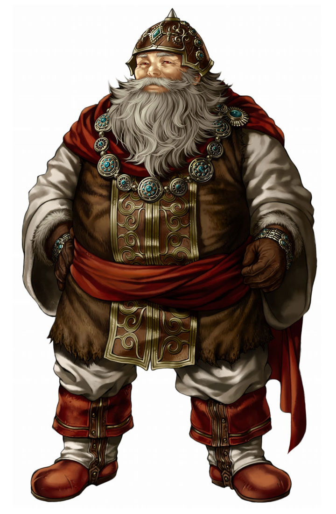

Playable Races > Dwarf
Short, sturdy creatures fond of drink and industry. They take great pride in their flowing beards. White Dwarves from Iklistzefon are rational, level-headed and open minded due to their worship of the light. Red Dwarves from Angilrom are much more thrill-seeking, impatient, bold and quarrelsome due to their lingering loyalty to the Dragon God.
Weaponmasters: White Dwarves are proficient with blunt weapons, while Red Dwarves are proficient with axes.
Cave Adaptation: Both types of Dwarves can see in total darkness up to 30 feet.
Metallurgy: Dwarves can identify the upgrade level of any item and whether something is made out of metal, as well as its type and hardness.
Racials: +1 STR +2 CON -2 AGI +4 to all Craft skills
Health: 1d8 health points per level.
Origin: See Iklistzefon and Angilrom for origins.